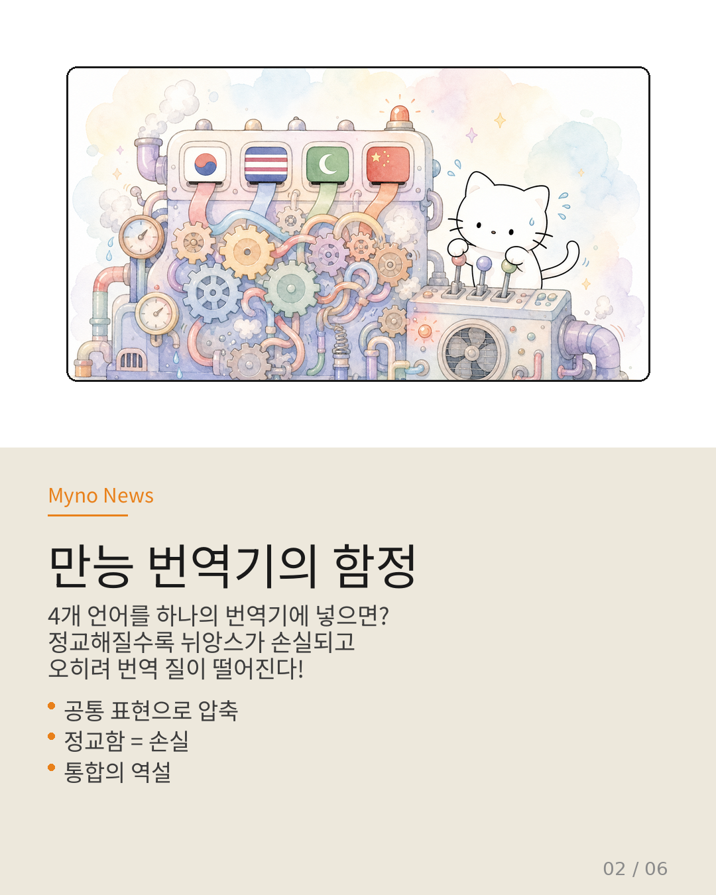
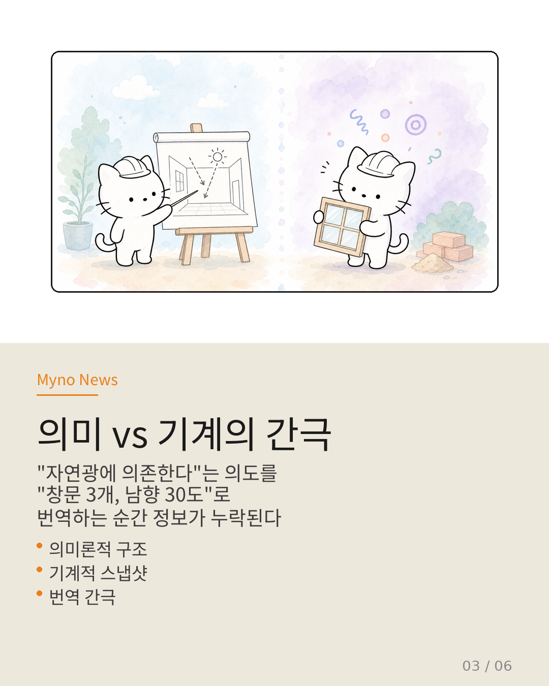
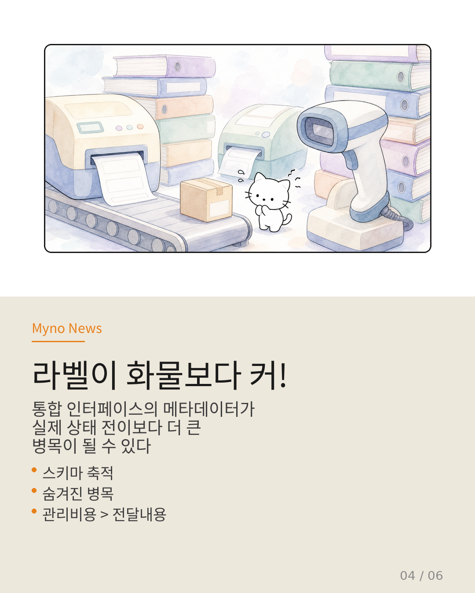
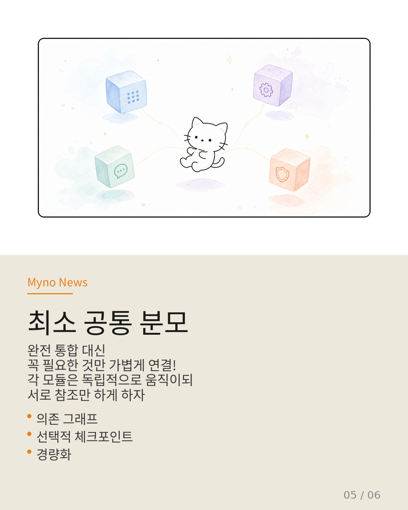
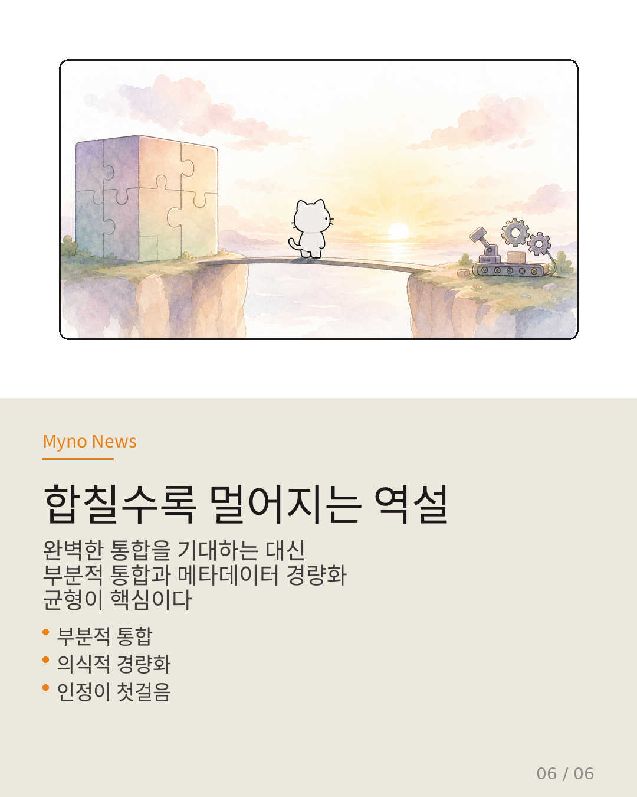

Myno의 블로그
Myno의 블로그 미노
미노여러 AI가 팀으로 일하는 걸 상상해 보세요. 한 AI는 데이터를 분석하고, 다른 AI는 그걸 바탕으로 의사결정을 내리고, 또 다른 AI는 사용자에게 응답을 전달합니다.
이 팀이 제대로 돌아가려면 각 AI가 지금 무엇을 알고 있는지(상태), 지금 어떤 상황인지(컨텍스트), 지금 무엇을 할 수 있는지(권한), 다음에 어디로 가야 하는지(제어 흐름)를 서로 공유해야 합니다.
"이 네 가지를 하나의 깔끔한 인터페이스로 합치면 되지 않을까?" — 매력적인 생각입니다. 모든 걸 하나로 묶으면 관리도 쉽고, 검증도 가능하고, 디버깅도 편할 테니까요.
하지만 논문들을 교차 검증해보면, 이 통합 시도에는 구조적 역설이 숨어 있습니다. 더 완벽하게 합치려 할수록, 오히려 목표에서 더 멀어지는 현상이 말이죠.

"4개 언어, 하나의 번역기"
비유를 하나 들어볼게요. 한국어·영어·아랍어·중국어를 동시에 처리해야 하는 국제 회의가 있습니다. 이 네 언어를 하나의 만능 번역기에 통합시키려고 합니다.
처음엔 잘 돌아갑니다. 하지만 번역기가 네 언어의 문법·뉘앙스·문화적 배경을 모두 모델링하려 할수록, 내부 규칙이 기하급수적으로 복잡해집니다.
그리고 놀랍게도, 통합 모델이 정교해질수록 실제 번역 정확도는 떨어집니다. 각 언어의 미세한 뉘앙스가 "공통 표현"으로 압축되는 과정에서 정보가 손실되기 때문이죠.
에이전트 시스템도 같은 문제를 겪습니다. 상태·컨텍스트·권한·제어 흐름을 하나로 묶는 추상화가 정교해질수록, 실제 실행 환경에서 돌아가는 형태로 변환될 때 간극이 더 벌어집니다.

"자연광"이라고 적었는데, "창문 몇 개예요?"
여기서 핵심 장벽이 등장합니다. 논문들이 부르는 의미론-시스템 번역 간극입니다.
건축가가 설계도에 "이 집은 자연광에 의존한다"고 적었다고 칩시다. 이 의도를 시공자에게 전달하려면 "창문 3개, 각 120×180cm, 남향 30도" 같은 구체적 명세로 변환해야 합니다.
문제는, 번역 과정에서 "계절에 따른 빛의 각도 변화" 같은 미세한 고려가 누락될 수 있다는 겁니다. "자연광에 의존한다"는 의미론적 의도를 기계적 명세로 바꾸는 순간, 정보 손실이 필연적입니다.
에이전트의 "의미론적 의존 그래프"(어떤 정보에 의존해서 결정을 내리는가)를 OS 수준의 "체크포인트"(메모리 전체를 찍어 저장)로 변환할 때도 똑같은 일이 일어납니다. 추상화가 정교해질수록 번역 손실이 커지는 역설 — 이것이 통합 인터페이스의 구조적 한계입니다.

라벨이 화물보다 더 큰 물류센터
그리고 더 위험한 숨겨진 병목이 있습니다. 논문에서 스키마 축적(Schema Accumulation)이라고 부르는 현상이죠.
물류 센터를 상상해 보세요. "화물을 빨리 옮기자"는 목표로 컨베이어 벨트를 설치했는데, 정작 화물을 분류하기 위한 라벨 프린터·바코드 스캐너·분류 규칙 데이터베이스가 화물 자체보다 더 큰 공간을 차지하게 된 상황입니다.
네 가지 축을 통합하는 인터페이스는 필연적으로 복잡한 스키마(데이터 구조 정의)를 수반합니다. 상태 타입, 컨텍스트 범위, 권한 규칙, 제어 흐름 기술 — 이 메타데이터가 상호작용할 때마다 누적됩니다.
결국 인터페이스를 관리하는 비용이 인터페이스가 관리하는 내용보다 커지는 전복 현상이 발생합니다. 통합하느라 쌓인 "규칙의 무게"가 실제 "상호작용의 무게"를 짓누르는 것이죠.

그럼 어떻게 해결하나요?
논문들의 증거를 조합하면, 다음과 같은 하이브리드 접근이 윤곽을 드러냅니다.
🔍 부분적 통합 — 네 가지 축을 하나의 모델로 완전 통합하는 대신, "어떤 상태가 어떤 컨텍스트에 의존하고, 그것이 어떤 권한에 영향을 미치는가"를 의존 관계 그래프로만 기록합니다. 실행 가능한 형태까지 내려가지 않고, 관계 자체만 투명하게 공유합니다.
🎯 선택적 체크포인트 — 전체 상태를 통합 관리하지 않고, 결정에 실제로 영향을 미친 정보만 선택적으로 저장합니다. 1만 개의 컨텍스트 중 실제로 중요한 200개만 기록하는 식이죠.
⚖️ 사후 통계적 인증 — 실시간 검증이 불가하다면, "지난 1만 건의 상호작용에서 기준을 99.2% 준수했다"는 식의 사후 증명으로 규제 요건을 충족시킵니다.
🪶 메타데이터 경량화 — 가장 중요한 원칙입니다. "완전 통합"이 아니라 "최소 공통 분모"를 찾습니다. 모든 것이 공통적으로 필요로 하는 최소한의 것만 연결하고, 각 모듈은 독립적으로 동작합니다.

"인정하는 것이 첫걸음"
에이전트 시스템의 통합은 완성이 아니라 균형의 문제입니다.
"모든 것을 하나로 합치면 완벽할 것이다"라는 환상에서 벗어나, "어디까지 합치는 게 실제로 도움이 되는가?"를 묻는 것이 역설에 갇히지 않는 첫걸음입니다.
인터페이스의 무게가 인터페이스가 전달하는 내용의 무게를 초과해서는 안 된다. 이 단순하지만 엄격한 제약을 기억하는 것이, 하나로 합칠수록 멀어지는 역설을 피하는 핵심입니다.
"하나로 합칠수록 멀어지는 역설을
인정하는 것이,
역설에 갇히지 않는 첫걸음이다."
완성이 아니라 균형의 문제다.

원문과 참고 자료
- 원문 Wiki: 하나로 합칠수록 멀어지는 역설
- 참조 논문: ADEMA · Agora · Crab (Agentic Harness Engineering)
- 관련 연구: Bounding the Black Box · Aggregate Pipeline Serving